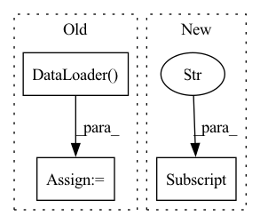

Pattern ID :32112
Before Change
test_batch_sampler = paddle.io.BatchSampler(dataset=test_ds,
batch_size=args.batch_size,
shuffle=False)
test_data_loader = paddle.io.DataLoader(
dataset=test_ds, batch_sampler=test_batch_sampler, return_list=True)
metric = SpanEvaluator()
precision, recall, f1 = evaluate(model, metric, test_data_loader)
logger.info("-----------------------------")After Change
if "的" not in data["prompt"]:
class_dict.setdefault(class_name, []).append(data)
else:
relation_data.append((data["prompt"] , data))
relation_type_dict = get_relation_type_dict(relation_data)
else:
class_dict["all_classes"] = test_dsIn pattern: SUPERPATTERN
Frequency: 4
Non-data size: 3
Instances Fragment ID: 94066971
Project Name: paddlepaddle/paddlenlp
Commit Name: 87613d4c2517594921dcabbfe0afd549fa05869e
Time: 2022-09-14
Author: 40840292+linjieccc@users.noreply.github.com
File Name: model_zoo/uie/evaluate.py
M Class Name: AnonimousClass
N Class Name: AnonimousClass
M Method Name: do_eval(0)
N Method Name: do_eval(0)
M Parent Class:
N Parent Class:
M File Name: model_zoo/uie/evaluate.py
N File Name: model_zoo/uie/evaluate.py
M Start Line: 68
M End Line: 84
N Start Line: 56
N End Line: 115
Before Change
// from libs.FastAutoAugment.data import Augmentation
// from libs.FastAutoAugment.archive import fa_resnet50_rimagenet
train_loader = torch.utils.data.DataLoader(
my_dataloader(input_data[0],transforms.Compose([
TrainDataAug(img_size, img_size),
//ImageNetPolicy(), //autoaug
//Augmentation(fa_resnet50_rimagenet()), //fastaa
transforms.ToTensor(),
my_normalize,
])),
batch_size=batch_size, shuffle=True, **kwargs)
val_loader = torch.utils.data.DataLoader(
my_dataloader(input_data[1],transforms.Compose([
TestDataAug(img_size, img_size),After Change
cfg["label_type"],
label_path,
transforms.Compose([
TestDataAug(cfg["img_size"] ),
transforms.ToTensor(),
my_normalize
])), Fragment ID: 94066970
Project Name: fire717/fireclassification
Commit Name: 4628b872d596723f152ee50023b336a44d59c320
Time: 2020-11-26
Author: yi.wei@imprexion.com.cn
File Name: fire/datatools.py
M Class Name: AnonimousClass
N Class Name: AnonimousClass
M Method Name: getDataLoader(3)
N Method Name: getDataLoader(6)
M Parent Class:
N Parent Class:
M File Name: fire/datatools.py
N File Name: fire/datatools.py
M Start Line: 167
M End Line: 277
N Start Line: 209
N End Line: 286
Before Change
batch_sampler = paddle.io.BatchSampler(dataset, batch_size=self.batch_size, shuffle=False)
data_loader = paddle.io.DataLoader(
dataset=dataset, batch_sampler=batch_sampler, collate_fn=collate_fn, return_list=True
)
all_embeddings = {"query": [], "passages": []}
// Todo(tianxin04): ErnieDualEncoder subclass nn.Module,After Change
for passages in dicts:
for item in passages["passages"]:
if self.embed_title:
datasets.append(item["title"] + item["text"])
else:
datasets.append(item["text"])
elif "query" in dicts[0]: Fragment ID: 94066973
Project Name: paddlepaddle/paddlenlp
Commit Name: 35be940d8e29d002d830da63c5923f63b0ec4d5d
Time: 2023-03-06
Author: w5688414@gmail.com
File Name: pipelines/pipelines/nodes/retriever/dense.py
M Class Name: DensePassageRetriever
N Class Name: DensePassageRetriever
M Method Name: _get_predictions(2)
N Method Name: _get_predictions(2)
M Parent Class: BaseRetriever
N Parent Class: BaseRetriever
M File Name: pipelines/pipelines/nodes/retriever/dense.py
N File Name: pipelines/pipelines/nodes/retriever/dense.py
M Start Line: 273
M End Line: 325
N Start Line: 275
N End Line: 313
Before Change
testset = \
torchvision.datasets.ImageFolder(root=data_root, transform=transform)
testloader = torch.utils.data.DataLoader( testset, batch_size=batch_size, shuffle=False)
dataloaders = data_loaders_ImageNet(train_root, val_root, img_size=img_size,
batch_size=batch_size, seed=7)
After Change
// Walsh ordered transforms
time_start = time.perf_counter()
stat_walsh(dataloaders["train"] , device, stat_root, n_loop)
time_elapsed = (time.perf_counter() - time_start)
print(f"Computed in {time_elapsed} seconds") Fragment ID: 94066981
Project Name: openspyrit/spyrit
Commit Name: e7bbc4532d2c724d25c7f87a00096719fc9c56cd
Time: 2022-09-06
Author: nicolas.ducros@insa-lyon.fr
File Name: spyrit/misc/statistics.py
M Class Name: AnonimousClass
N Class Name: AnonimousClass
M Method Name: stat_walsh_ImageNet(6)
N Method Name: stat_walsh_ImageNet(6)
M Parent Class:
N Parent Class:
M File Name: spyrit/misc/statistics.py
N File Name: spyrit/misc/statistics.py
M Start Line: 466
M End Line: 489
N Start Line: 24
N End Line: 32